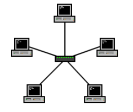
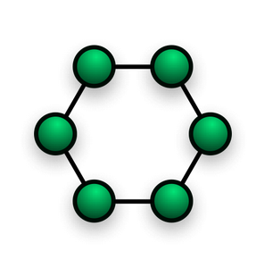

Una red en Bus es una red de ordenadores que se caracteriza por tener un único bus de comunicaciones, que es donde se conectan todos los dispositivos. Todos los dispositivos comparten un mismo canal de comunicación. Las estaciones están conectadas por un único segmento de cable. A diferencia de una red en anillo, el bus es pasivo, no se produce generación de señales en cada nodo o router. Esta topología tiene una facilidad de implementación y crecimiento, fácil adaptación, una arquitectura muy simple y es una red que utiliza poco espacio.
| Facilidad de implementación y crecimiento | Hay un límite de equipos dependiendo de la calidad de la señal. |
| Fácil adaptación | Puede producirse degradación de la señal. |
| Arquitectura muy simple | Complejidad de reconfiguración y aislamiento de fallos. |
| Red que utiliza poco espacio | Limitación de las longitudes físicas del canal. |
| Un problema en el canal usualmente degrada toda la red |
Una red en estrella es una red de ordenadores donde los dispositivos están directamente conectados a un punto central y todas las comunicaciones se hacen necesariamente a través de ese punto (ordenador, repetidor, servidor, etc.). Los dispositivos no se conectan entre sí, por lo que evitamos problemas, en los que se rompe un ordenador y se pierde la comunicación de todos los que estén conectados a él.
Principalmente, se usa en redes LAN, compuestas de un switch o hub siguiendo la topología. En este caso, el punto central o nodo central sería el switch o el hub, por el que pasan todos los paquetes de los usuarios.
Un dato curioso y que puede servir de información es que Google utiliza esta topología para su plataforma.
| Posee un sistema que permite agregar nuevos equipos fácilmente | Si el hub (repetidor) o switch central falla, toda la red deja de funcionar. |
| Reconfiguración rápida de cada daño | Es costosa, ya que requiere más cables que otras topologías. |
| Fácil de prevenir daños y/o conflictos, puesto que no afecta a los demás equipos si ocurre un fallo | El cable viaja por separado del concentrador a cada computador. |
| Centralización de la red | |
| Fácil de encontrar fallos de cada uno de ellos |
La topología de anillo es una red en la cual los dispositivos están conectados en forma de anillo. Cada dispositivo está conectado a dos dispositivos más. Esta topología tiene varias características. En un anillo la comunicación entre los dispositivos solo va en una dirección ósea que es unidireccional. Utilizan repetidores que regeneran y retransmiten la señal, es confiable y estable, la expansión de anillo es difícil, ya que debes interrumpir su conexión para agregar otro dispositivo, y el rendimiento y velocidad no es de los mejores.
Un dato es que tiene un protocolo llamado “Token Ring”, donde se utiliza un "token" (un mensaje especial) que se pasa de un dispositivo a otro en el anillo. Solo el dispositivo que posee el token puede transmitir datos, lo que garantiza un acceso ordenado y sin colisiones.
| Fácil de implementar y entender. | Dificultad para expandirse y agregar nuevos nodos. |
| La transmisión de datos es ordenada. | Si un nodo falla o el anillo se rompe, la red queda inoperable hasta que se repare. |
| La falla de un nodo no afecta a los demás. | La detección y solución de problemas pueden ser complejas.La detección y solución de problemas pueden ser complejas. |
| Adecuada para redes pequeñas y medianas | La detección y solución de problemas pueden ser complejas. |
Ventajas:La topología de doble anillo se utiliza a menudo en redes de fibra óptica, donde proporciona redundancia y confiabilidad. Cada host de la red está conectado a ambos anillos, aunque los dos anillos no están conectados directamente entre sí. La característica principal de esta topología es que si una conexión falla en un anillo, la red todavía puede funcionar utilizando el otro anillo.